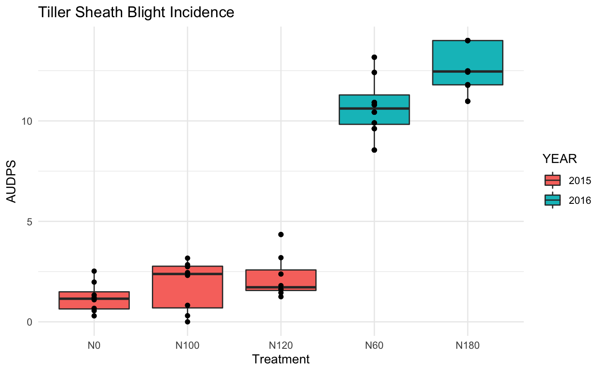

vignettes/a02_raw_data_visualisation.Rmd
a02_raw_data_visualisation.RmdLoad packages necessary to conduct this work.
library("rice.awd.shb") library("dplyr") library("ggplot2") theme_set(theme_minimal())
ggplot(RAW_data, aes(x = LEAF_ShB)) + geom_histogram(aes(fill = YEAR), stat = "count") + facet_grid(WMGT ~ NRTE) + ggtitle("Leaf Sheath Blight Severity Rating")
## Warning: Ignoring unknown parameters: binwidth, bins, padggplot(RAW_data, aes(x = TIL_ShB)) + geom_histogram(aes(fill = YEAR), stat = "count") + facet_grid(WMGT ~ NRTE) + ggtitle("Tiller Sheath Blight Severity Rating")
## Warning: Ignoring unknown parameters: binwidth, bins, padggplot(RAW_data, aes(x = TShB_incidence)) + geom_density(aes(fill = YEAR, colour = YEAR)) + geom_rug() + scale_linetype(name = "Year") + facet_grid(WMGT ~ NRTE) + ggtitle("Tiller Sheath Blight Incidence") + theme(axis.text.x = element_text(size = 8, angle = 45, hjust = 1))
ggplot(RAW_data, aes(x = GL, linetype = YEAR)) + geom_histogram(aes(fill = YEAR), position = "dodge") + xlab("Count") + ggtitle("Green Leaves per Tiller")
## `stat_bin()` using `bins = 30`. Pick better value with `binwidth`.ggplot(RAW_data, aes(x = DL, linetype = YEAR)) + geom_histogram(aes(fill = YEAR), position = "dodge") + xlab("Count") + ggtitle("Dry Leaves per Tiller")
## `stat_bin()` using `bins = 30`. Pick better value with `binwidth`.ggplot(RAW_data, aes(x = ASMT, y = LEAF_ShB)) + geom_point(position = position_jitter(width = 0.05), aes(colour = YEAR), size = 0.75) + xlab("Assessment") + ylab("Rating") + ggtitle("Leaf Sheath Blight Severity at Each Assessment") + facet_grid(. ~ YEAR) + theme(strip.text.x = element_text(angle = 90))
ggplot(RAW_data, aes(x = ASMT, y = TIL_ShB)) + geom_point(position = position_jitter(width = 0.05), aes(colour = YEAR), size = 0.75) + xlab("Assessment") + ylab("Rating") + facet_grid(. ~ YEAR) + ggtitle("Tiller Sheath Blight Severity at Each Assessment") + theme(strip.text.x = element_text(angle = 90))
ggplot(RAW_data, aes(x = ASMT, y = TShB_incidence, group = TShB_incidence)) + geom_point(position = position_jitter(width = 0.05), aes(colour = YEAR), size = 0.75) + xlab("Assessment") + ylab("Incidence") + facet_grid(. ~ YEAR) + ggtitle("Tiller Sheath Blight Severity Rating Over Time") + theme(strip.text.x = element_text(angle = 90)) + xlab("Assessment") + ylab("Incidence") + ggtitle("Tiller Sheath Blight at Each Assessment")
ggplot(RAW_data, aes(x = WMGT, y = TShB_incidence)) + geom_point(position = position_jitter(width = 0.2), aes(colour = YEAR), size = 0.1) + geom_violin(fill = NA) + theme(axis.text.x = element_text(size = 8, angle = 45, hjust = 1)) + xlab("Treatment") + ylab("Incidence per Hill") + facet_grid(. ~ NRTE) + ggtitle("Tiller Sheath Blight Incidence")
ggplot(AUDPS, aes(x = NRTE, y = TShB_inc_AUDPS)) + geom_boxplot(aes(fill = YEAR)) + geom_point() + xlab("Treatment") + ylab("AUDPS") + ggtitle("Tiller Sheath Blight Incidence")

ggplot(AUDPS, aes(x = WMGT, y = TShB_inc_AUDPS)) + geom_boxplot(aes(fill = YEAR)) + geom_point() + xlab("Treatment") + ylab("AUDPS") + facet_grid(. ~ YEAR) + ggtitle("Tiller Sheath Blight Incidence")
ggplot(AUDPS, aes(x = NRTE, y = LShB_percent_AUDPS)) + geom_boxplot(aes(fill = YEAR)) + geom_point() + xlab("Treatment") + ylab("AUDPS") + ggtitle("Leaf Sheath Blight Severity")
ggplot(AUDPS, aes(WMGT, y = LShB_percent_AUDPS)) + geom_boxplot(aes(fill = YEAR)) + geom_point() + xlab("Treatment") + ylab("AUDPS") + facet_grid(. ~ YEAR) + ggtitle("Leaf Sheath Blight Severity")
ggplot(AUDPS, aes(x = WMGT, y = TShB_percent_AUDPS)) + geom_boxplot(aes(fill = WMGT)) + geom_point() + xlab("Treatment") + ylab("AUDPS") + facet_grid(. ~ YEAR) + ggtitle("Tiller Sheath Blight Severity")
ggplot(AUDPS, aes(x = NRTE, y = TShB_percent_AUDPS)) + geom_boxplot(aes(fill = YEAR)) + geom_point() + xlab("Treatment") + ylab("AUDPS") + ggtitle("Tiller Sheath Blight Severity")
RAW_data %>% group_by(YEAR, WMGT, NRTE, ASMT) %>% summarize(value = mean(PERC_LEAF_ShB)) %>% ggplot(aes(x = ASMT, y = value, color = NRTE, group = NRTE)) + geom_line() + xlab("Assessment") + ylab("Severity (%)") + facet_grid(WMGT ~ YEAR) + ggtitle("Leaf Sheath Blight")
## `summarise()` regrouping output by 'YEAR', 'WMGT', 'NRTE' (override with `.groups` argument)RAW_data %>% group_by(YEAR, WMGT, NRTE, ASMT) %>% summarize(value = mean(PERC_TIL_ShB)) %>% ggplot(aes(x = ASMT, y = value, color = NRTE, group = NRTE)) + geom_line() + xlab("Assessment") + ylab("Severity (%)") + facet_grid(WMGT ~ YEAR) + ggtitle("Tiller Sheath Blight")
## `summarise()` regrouping output by 'YEAR', 'WMGT', 'NRTE' (override with `.groups` argument)RAW_data %>% group_by(YEAR, WMGT, NRTE, ASMT) %>% summarize(value = mean(TShB_incidence)) %>% ggplot(aes(x = ASMT, y = value, color = NRTE, group = NRTE)) + geom_line() + xlab("Assessment") + ylab("Incidence (%)") + facet_grid(WMGT ~ YEAR) + ggtitle("Tiller Sheath Blight")
## `summarise()` regrouping output by 'YEAR', 'WMGT', 'NRTE' (override with `.groups` argument)